9 Quantifying model uncertainty
The partial dependence plots generated in the previous chapter visualise the marginal effect of certain predictors on the outcome log(VIR). We use a bootstrapping approach to quantify the model uncertainty.
9.1 Setting-up the environment
9.2 Load the constructed models
9.3 Determine evaluation grid
In the previous chapter we have seen that the partial dependence plots are difficult to interpret when the data is not distributed evenly across the entire range. A good example of this is the proportion of an area covered by forests: this is always never close to 1 in The Netherlands, as forests are comparatively rare habitats. Instead of bootstrapping estimates for the entire domain of variable values, we will thus limit it by the central 90% of the data. The calculation of the evaluation grid is based off of the plot.gbm.4list() function, originally written by Elith & Leathwick ((???): Add ref), included in ggBRT, so we can directly plug it in the bootstrapping functions provided by the same package.
calculate_evaluation_grid <- function(model, qlim = c(0.05, 0.95), continuous.resolution = 100) {
variables <- model$var.names
grid <- vector("list", length(variables))
for (i in seq_along(variables)) {
if (typeof(qlim) == "list") {
quantiles <- quantile(model$gbm.call$dataframe[, variables[i]], as.numeric(unlist(qlim[variables[i]])))
} else {
quantiles <- quantile(model$gbm.call$dataframe[, variables[i]], qlim)
}
grid[[i]] <- expand.grid(seq(from = quantiles[1], to = quantiles[2], length.out = continuous.resolution))
colnames(grid[[i]]) <- paste("X", i, sep = "")
}
grid
}
qlims <- list("dist_radar" = c(0, 1), "total_biomass" = c(0.05, 0.95),
"dist_urban" = c(0.05, 0.95), "human_pop" = c(0.05, 0.95), "disturb_pot" = c(0.05, 0.95),
"agricultural" = c(0, 1), "urban" = c(0, 1), "semiopen" = c(0, 1), "forests" = c(0, 1), "wetlands" = c(0, 1), "waterbodies" = c(0, 1))
grids <- lapply(models, function(x) calculate_evaluation_grid(x, qlim = qlims, continuous.resolution = 1000))9.4 Bootstrapped retraining of gbm models
Using the bootstrapping procedure provied in ggBRT we can derive uncertainty estimates from the trained models.
source("R/gbm.bootstrap.functions.modified.R")
bootstraps <- mcmapply(function(m, g) gbm.bootstrap.functions.modified(m, list.predictors = g, n.reps = 100, n.divisions = 1000),
m = models, g = grids, SIMPLIFY = FALSE, mc.cores = cpucores, mc.preschedule = TRUE)
saveRDS(bootstraps, file = "data/models/brt_models_bootstrap.RDS")As we bootstrapped the relative importance of the model predictors, we can visualise the distributions of these values as follows:
bootstraps <- readRDS("data/models/brt_models_bootstrap.RDS")
relinf_uncertainty <- function(bootstrap) {
as.data.frame(bootstrap$rel.infs) %>%
rownames_to_column(var = "predictor") %>%
pivot_longer(-predictor, names_to = "bootstrap_sample") -> bootstrap_long
bootstrap_long %>%
pivot_wider(names_from = predictor, values_from = value) %>%
median_qi(.width = c(0.5), .exclude = "bootstrap_sample") %>%
dplyr::select(-contains(".")) %>%
pivot_longer(cols = everything(), names_to = "predictor", values_to = "bootstrap_median") -> predictor_summaries
predictor_summaries[order(-predictor_summaries$bootstrap_median), ] %>%
rowid_to_column(var = "rank") %>%
dplyr::select(predictor, rank) %>%
mutate(rank = fct_rev(as.factor(rank))) -> predictor_summaries
bootstrap_long %>%
left_join(predictor_summaries, by = "predictor") -> relinf_uncertainty
relinf_uncertainty %>%
ggplot(aes(y = rank, x = value)) +
stat_eye(point_interval = median_qi, .width = c(0.5)) + # Thinnest black bar represents 95%, other 50% and point = median
scale_y_discrete(labels = rev(predictor_summaries$predictor)) +
labs(x = "Relative influence (%)",
y = "Predictor",
title = "Relative influence of predictors on outcome variable",
subtitle = paste(unique(bootstrap$gbm.call$dataframe$datetime))) -> p
list(relinf_uncertainty, p)
}
relinf_uncertainties <- lapply(bootstraps, relinf_uncertainty)
relinf_uncertainties[[1]][[2]]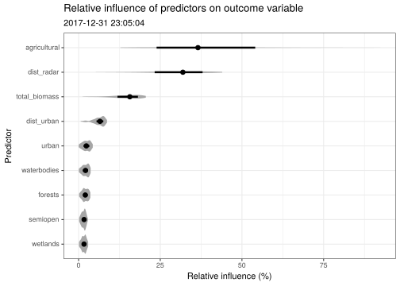
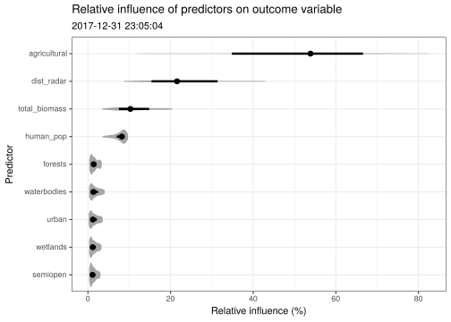

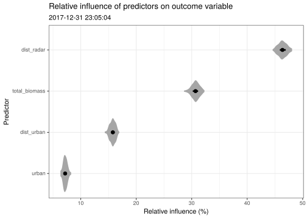
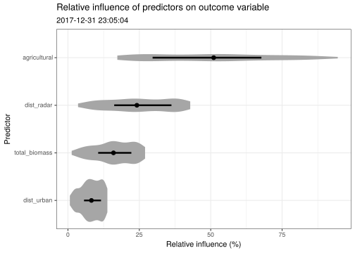
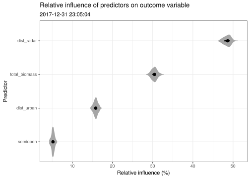
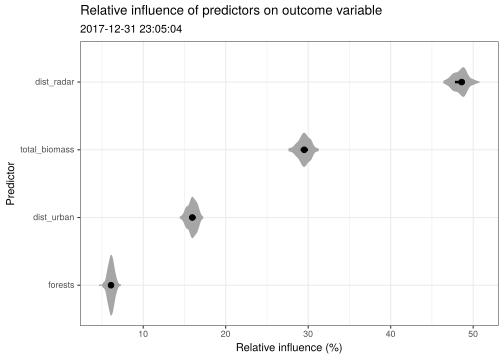
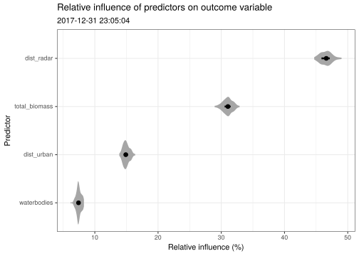
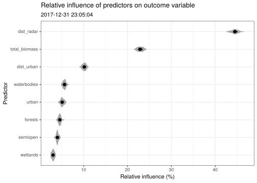
The large ‘spread’ of agricultural suggests something strange is going on there. I would imagine this is quite likely to be the result of some retained ground clutter with unusually high reflectivities that affects these outcomes. Additionally, ‘agriculture’ is the baseline land use class of the dataset, so resampling during bootstrapping is quite likely to sample
9.5 Plot bootstrapped uncertainties
bootstrap_uncertainty <- function(predictor, boot, grid, model, confidence.intervals = c(0.95, 0.8), central.measure = mean, plot = FALSE,
loess = TRUE, loess.span = 0.25, rug = TRUE, rug.limits = c(0, 1), qlim = c(0.05, 0.95), ylab = "Response") {
k <- match(predictor, boot$gbm.call$predictor.names)
# Gather x values from evaluation grid
x <- as.data.frame(grid[[k]])
colnames(x) <- "x"
# Calculate quantiles
probs <- c(sapply(confidence.intervals, function(x) 1 - x), confidence.intervals)
quantiles <- t(apply(boot$function.preds[, k, ], 1, quantile, probs))
colnames(quantiles) <- paste("q", gsub("%", "", colnames(quantiles)), sep = "")
quantiles <- as.data.frame(quantiles)
# Calculate measure of central tendency
central <- as.data.frame(apply(boot$function.preds[, k, ], 1, central.measure))
colnames(central) <- "central_measure"
# Calculate partial dependence
grid_df <- as.data.frame(grid)
colnames(grid_df) <- model$var.names
grid_df <- grid_df[, predictor, drop = FALSE]
model_pdp <- partial(model, train = model$gbm.call$dataframe, pred.var = predictor, type = "regression", n.trees = model$n.trees, pred.grid = grid_df)["yhat"]
# Smooth
if (loess) {
variables <- c(colnames(quantiles), colnames(central), colnames(model_pdp))
unsmoothed <- data.frame(x, quantiles, central, model_pdp)
loess.smooth <- function(x, span) {
predict(loess(formula = paste(x, "x", sep = "~"), data = unsmoothed, span = loess.span))
}
smoothed <- as.data.frame(lapply(variables, loess.smooth, span = loess.span), col.names = variables)
uncertainty <- data.frame(x, smoothed)
} else {
uncertainty <- data.frame(x, quantiles, central, model_pdp)
}
if (plot) {
p <- ggplot(uncertainty)
i <- 1
for (ci in sort(confidence.intervals, decreasing = TRUE)) {
colors <- rev(c("#969696", "#cccccc", "#f7f7f7"))
ymax <- as.name(paste("q", ci * 100, sep = ""))
ymax <- enquo(ymax)
ymin <- as.name(paste("q", (1 - ci) * 100, sep = ""))
ymin <- enquo(ymin)
p <- p +
geom_ribbon(aes(x = x, ymin = !!ymin, ymax = !!ymax), fill = colors[i], alpha = 1)
i <- i + 1
}
p <- p +
geom_line(aes(x = x, y = central_measure), color = "#252525")
p <- p +
geom_line(data = uncertainty, aes(x = x, y = yhat), colour = "#2b8cbe", size = 2) +
geom_hline(yintercept = mean(boot$function.preds[, k, ]))
rug <- as.data.frame(quantile(model$gbm.call$dataframe[, predictor], seq(from = rug.limits[1], to = rug.limits[2], by = 0.1)))
colnames(rug) <- "x"
p <- p +
geom_rug(data = rug, aes(x = x))
minmax <- quantile(model$gbm.call$dataframe[, predictor], qlim)
vals <- model$gbm.call$dataframe[model$gbm.call$dataframe[, predictor] >= minmax[1] & model$gbm.call$dataframe[, predictor] <= minmax[2], predictor]
vals <- data.frame(vals)
colnames(vals) <- "x"
p <- p +
stat_density(data = vals, aes(x = x, y = ..scaled..), geom = "line")
p <- p +
xlab(predictor) +
ylab(ylab)
p
} else {
uncertainty
}
}
plot_model_pdp <- function(model, bootstrap, grid, relinf_uncertainty, loess = TRUE, loess.span = 0.4) {
relinf <- relinf_uncertainty[[1]] %>%
group_by(predictor) %>%
mutate(mean_relinf = mean(value)) %>%
dplyr::select(predictor, mean_relinf, rank) %>%
distinct() %>%
identity()
p <- lapply(model$var.names, function(x) {
if (x %in% c("total_biomass", "dist_urban", "human_pop", "disturb_pot")) {
bootstrap_uncertainty(x, bootstrap, grid, model, confidence.intervals = c(0.95, 0.8), plot = TRUE,
central.measure = median, loess.span = loess.span, loess = loess, rug.limits = c(0.05, 0.95))
} else {
bootstrap_uncertainty(x, bootstrap, grid, model, confidence.intervals = c(0.95, 0.8), plot = TRUE,
central.measure = median, loess.span = loess.span, loess = loess, rug.limits = c(0, 1))
}
})
p
}
a <- mapply(function(model, bootstrap, grid, relinf_uncertainty, name) {
plots <- plot_model_pdp(model, bootstrap, grid, relinf_uncertainty, loess = TRUE, loess.span = 0.4)
# print(name)
p <- wrap_plots(plots) + plot_annotation(title = name)
print(p)
}, model = models, bootstrap = bootstraps, grid = grids, relinf_uncertainty = relinf_uncertainties, name = names(models))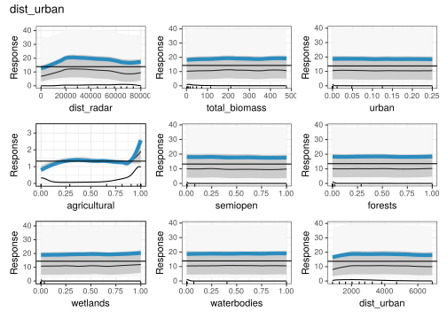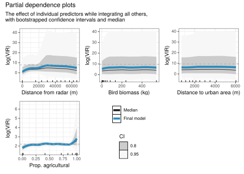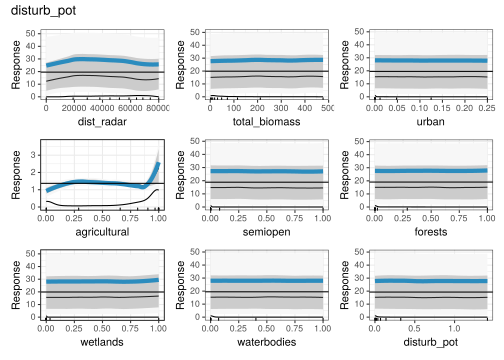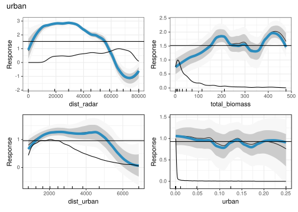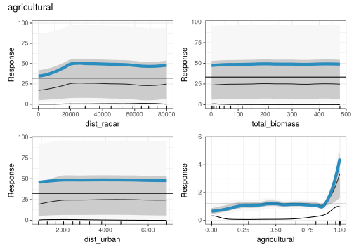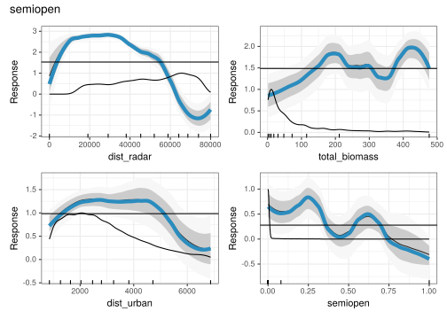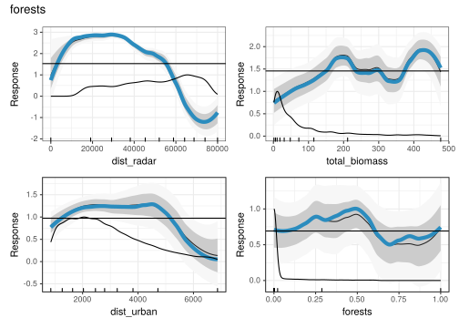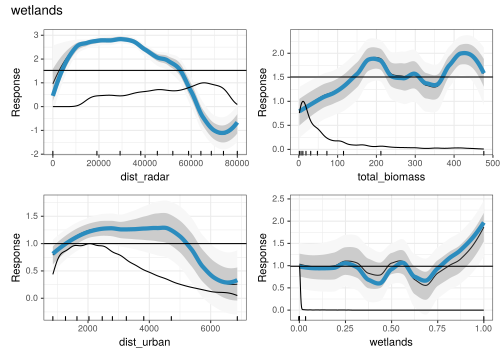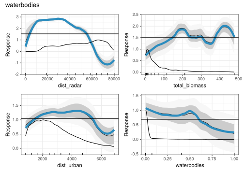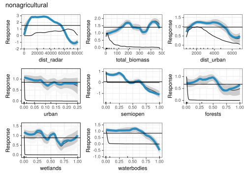
9.6 Show model residuals
df <- models[[10]]$gbm.call$dataframe
df$preds <- predict(models[[10]], n.trees = models[[10]]$n.trees)
df$resid <- residuals(models[[10]])
ppi <- readRDS("data/processed/composite-ppis/201712312305.RDS")
#
ppi$data@data %>%
left_join(dplyr::select(df, pixel, preds, resid), by = "pixel") -> ppi$data@data
ppi$data@data$VIR_log <- log10(ppi$data@data$VIR)
ppi$data@data$total_biomass_log <- log10(ppi$data@data$total_biomass / 1000)
# mapview(ppi$data[, , c("VIR_log", "pixel", "preds", "resid")], layer.name = c("VIR", "pixel", "preds", "resid"), at = seq(from = 0, to = 5, length.out = 100), na.color = "transparent")
mapview(ppi$data[, , c("resid")], layer.name = c("resid"), col.regions = colorspace::diverging_hcl)Random forests and stochastic gradient boosting for predicting tree canopy cover: comparing tuning processes and model performance Freeman, Moisen, Coulston & Wilson 2015